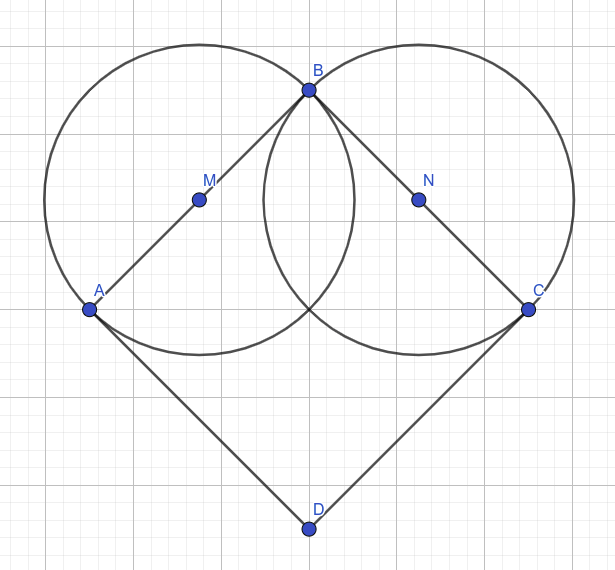

Цртање облика помоћу функције pg.draw - кругови, многоуглови¶
Цртање кругова¶
Библиотека PyGame омогућава и једноставно цртање кругова, коришћењем
функције pg.draw.circle. Параметри функције су редом:
прозор на коме се црта,
боја којом се црта,
уређени пар (обавезно целих бројева) којим се задају координате центра круга,
полупречник круга (обавезно цео број).
Након полупречника је могуће задати и дебљину круга у пикселима (у том случају се црта само кружна линија, као што је урађено у случају црвеног круга). Ако се тај параметар изостави, онда се црта круг који је испуњен бојом (као што је урађено у случају плавог круга).
Илуструјмо цртање кругова наредним примером (наведен је само његов централни део, а да би он могао да функционише ван прегледача веба, потребно је да се наведе цео програм укључујући и почетни и завршни део, који је идентичан у свим програмима у овом поглављу).
Првим позивом функције pg.draw.circle нацртана је црвена кружница
дебљине 2, са центром у тачки \((50, 50)\), полупречника 30, док је другим
позивом нацртан плави круг са центром у тачки \((150, 150)\), полупречника
50 пиксела.
Три круга¶

Напиши програм који исцртава три круга чији је центар у центру екрана. Највећи треба да буде црвен и да има полупречник 100 и да буде црвен, средњи полупречник 75 и да буде плав, а најмањи полупречник 50 и да буде зелен.
У програм смо ставили наредбу за цртање црвеног круга, а твој задатак је да додаш наредбе за цртање плавог и зеленог круга.
Цртање многоуглова¶
Троугао се може нацртати помоћу три појединачне дужи. На сличан начин можемо нацртати и било који други многоугао. Међутим, ако се многоуглови цртају на тај начин, они се не сматрају као целина и не могу, на пример, бити попуњени. Библиотека PyGame даје могућност и за директно цртање многоуглова (каже се и полигона).
Многоугао се црта функцијом pg.draw.polygon чији су параметри
редом:
прозор на ком се црта,
боја,
листа уређених парова који представљају координате темена многоугла (она се обично наводи у облику
[(x1, y1), (x2, y2), ..., (xn, yn)]).
Многоугао се састоји од дужи које спајају суседна темена у наведеној листи. Подразумева се да је многоугао затворен, тј. да многоугао садржи и линију између последњег и првог темена. Ако се иза листе темена наведе дебљина, црта се само ивица многоугла, а ако се тај аргумент изостави или се наведе нула, онда се многоугао испуњава бојом.
Размотримо наредни пример.
Многоугао
Кућицу смо нацртали као црвени испуњен многоугао, а затим смо њен
оквир нацртали као црну многоугаону линију дебљину 3 пиксела. Да не
бисмо исту листу координата наводили два пута, увели смо променљиву
temena.
Увежбај цртање многоуглова тако што ћеш решити наредних неколико задатака.
Срце¶
Напиши програм који исцртава црвено срце.
Срце можемо нацртати и помоћу једног квадрата и два круга.
{kind=link}
Претпоставимо да се центар квадрата (тачка \(О\)) налази у центру екрана
(координате су јој \((100, 100)\)) и претпоставимо да су висина и ширина
квадрата (заправо његове дијагонале) једнаке 100 пиксела. На основу
тога можеш једноставно израчунати положаје темена квадрата (нпр. тачка
A има координате \((50, 100)\)). Пошто квадрат није постављен тако да му
странице буду паралелне осама, не можемо га цртати помоћу
pg.draw.rect, већ помоћу pg.draw.polygon. Центри кругова се
налазе на срединама страница квадрата. Средиште дужи се (због
сличности троуглова) налази и хоризонтално и вертикално на средини
између темена дужи, и на основу тога му лако можемо одредити
координате (на пример, координате тачке \(M\) су \((75, 75)\)). На крају
остаје да се одреди полупречник круга. То можемо урадити
експериментално (тако што испробавамо разне вредности све док док не
добијемо задовољавајућу слику), међутим, много је боље применити знање
из математике и полупречник израчунати. Полупречник круга је половина
странице квадрата. Пошто је \(d = a\sqrt{2}\), важи да је \(a
= \frac{d}{\sqrt{2}}\). Дужина дијагонале је 100 пиксела, па је зато
полупречник око 35 пиксела.
Споји тачке¶
У низу tacke дата су темена многоугла. Нацртај тај многоугао на
позадини боје darkgreen, попуњен бојом khaki. Шта
представља многоугао који цртамо?
Најважније из ове лекције¶
Функција за цртање круга,
pg.draw.circleузима као аргументе прозор на коме се црта, боју, координате центра круга и полупречник круга.Функција за цртање круга у општем облику изгледа овако
pg.draw.circle(prozor, boja, (centar_x, centar_y), poluprecnik, debljina kruznice)Функција за цртање многоугла,
pg.draw.polygonузима као аргументе прозор на коме се црта, боју, листу координата темена многоугла, дебљину спољне линијеФункција за цртање многоугла у општем облику изгледа овако
pg.draw.polygon(prozor, boja, [(teme1_x, teme1_y), (teme2_x, teme2y), (teme3_x, teme3_y)...], debljina)